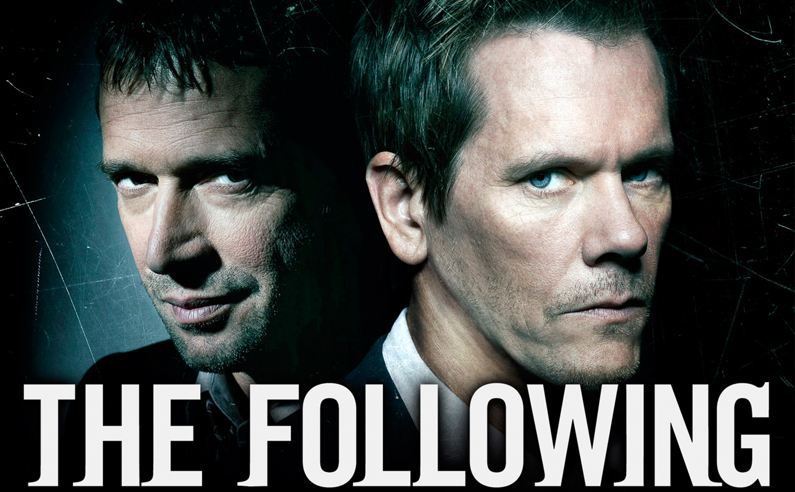

The following
Season Premiere: Monday, March 2 on FOX
In this psychological thriller from creator/executive producer Kevin Williamson (The Vampire Diaries, Dawson's Creek, the Scream franchise), Golden Globe winner and Emmy® nominee Kevin Bacon stars as Ryan Hardy, a former FBI agent called in to consult when notorious serial killer Joe Carroll (James Purefoy) escapes from death row. Hardy was the one responsible for Carroll's capture in 2003, after Carroll murdered 14 female students on the Virginia college campus where he taught literature.
Working closely with an FBI team, including Mike Weston (Shawn Ashmore), Hardy uncovered that Carroll was covertly communicating with a network of followers while in prison. Challenged with the ever-growing web of murders orchestrated by the devious Carroll, the FBI quickly learned that they were up against not one, but a cult of killers. As unimaginable events continued to unfold throughout the first season — the kidnapping of Carroll's son by follower Emma Hill (Valorie Curry), among others; another prison escape by Carroll; and the plotted reunion of Carroll with his ex-wife, Claire Matthews (Natalie Zea) — the FBI's investigations led them to uncover the depth of Carroll's cult and the larger plan that Carroll had in store. Meanwhile, Hardy desperately raced to stop Carroll before his endgame reached its deadly conclusion. The explosive first season finale featured the highly anticipated face-off between Ryan and Carroll, ending in Carroll's ultimate demise and leaving Ryan's true love, Claire, hanging on for her life.
Heading into its intense, spellbinding second season, The Following catches up with Ryan Hardy, who has since withdrawn from consulting with the FBI after the shocking events at the end of the first season. After several bizarre incidents, however, Ryan realizes that Carroll's bloody web of murder is not over.
Cast
Ryan Hardy
Dr. Joe Carroll
Dra. Claire Matthews
Debra Parker
Mike Weston
Joey Matthews
Emma Hill
Max Hardy
Lily Gray

Jacob Wells
Luke y Mark Gray
Seasons
Season 1
1. "Pilot"
2. "Chapter two"
3. "The Poet's fire"
4. "Mad love"
5. "The Siege"
6. "The fall"
7. "Let me go"
8. "Welcome home"
9. "Love hurts"
10. "Guilt"
11. "Whips and regret"
12. "The curse"
13. "Havenport"
14. "The end is near"
15. "The final chapter"
Season 2
1. "Resurrection"
2. "For Joe"
3. "Trust me"
4. "Family affair"
5. "Reflection"
6. "Fly away"
7. "Sacrifice"
8. "The messenger"
9. "Unmasked"
10. "Teacher's pet"
11. "Freedom"
12. "Betrayal"
13. "The reaping"
14. "Silence"
15. "Forgive"